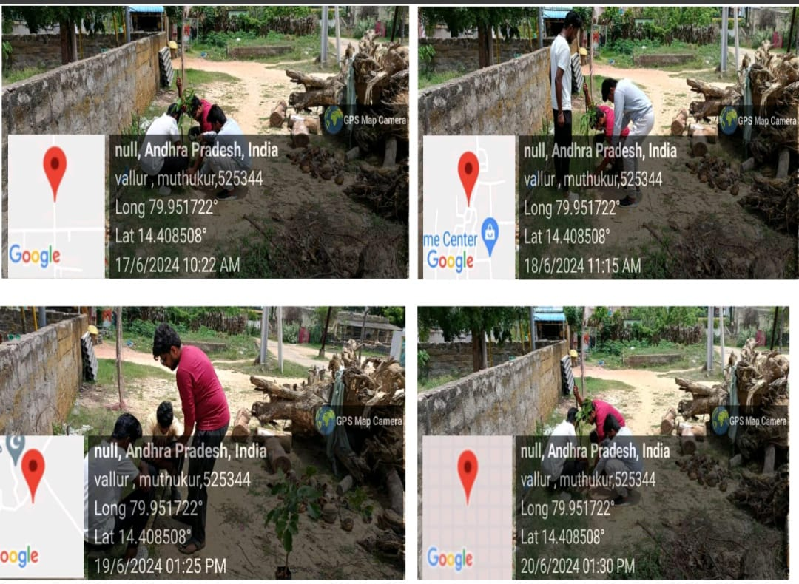

Detailed Report: I visited the area and asked permission to conduct a survey, but we got approval from Sachivalyam. I decided to survey the surroundings to observe the condition of the atmosphere.
I visited the village and asked for permission to conduct a survey, but we didn’t get approval from Sachivalyam because of the COVID-19 pandemic. The management was not allowing others.
Conducted a survey in the villages and surrounding areas. Noted down their problems and found that the land is polluted a lot and there are also fewer trees.
I conducted an awareness program about air pollution, explaining how the air is being polluted and the disadvantages of air pollution. People participated actively and raised doubts about pollution.
I observed that the villages do not have many trees and the air quality is poor, so I decided to donate some plants. I gave plants that provide oxygen as well as shelter.
